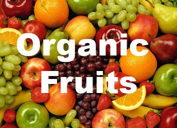

Company Information
Founded in 2001, Organic Fruits is now the world’s leading grower, distributor and retailer of organic produce, offering more than 100 varieties of home-grown and imported organic fruit and vegetables. Since its establishment, Organic Fruits has been a trusted source of delicious and healthy food grown without chemical fertilizers or pesticides. Organic Fruits is popular because of its down-to-earth reputation and the quality of its tasty, fresh organic fruit & vegetables. These are available in many supermarkets near you.
The manager expects you to emphasize the company name in the web pageCompany Logos
